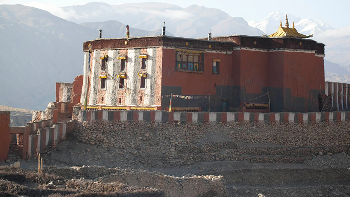
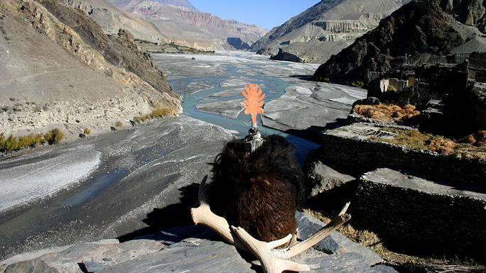
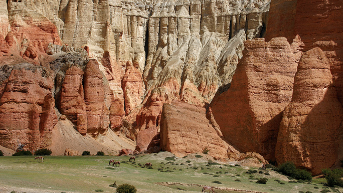
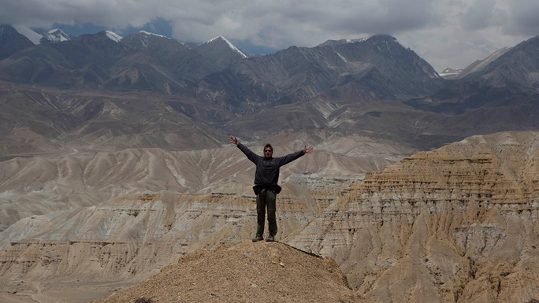
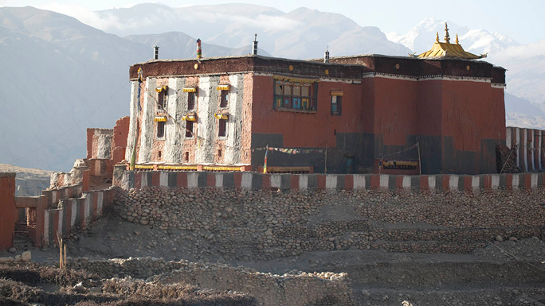
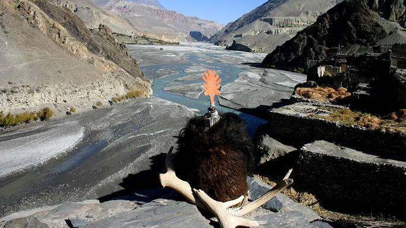
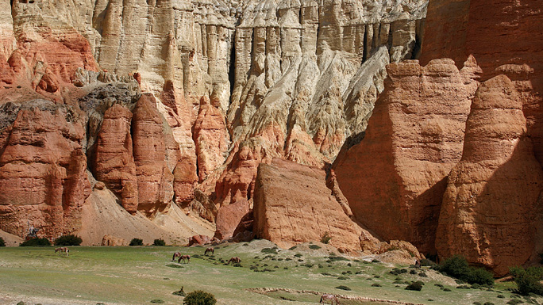
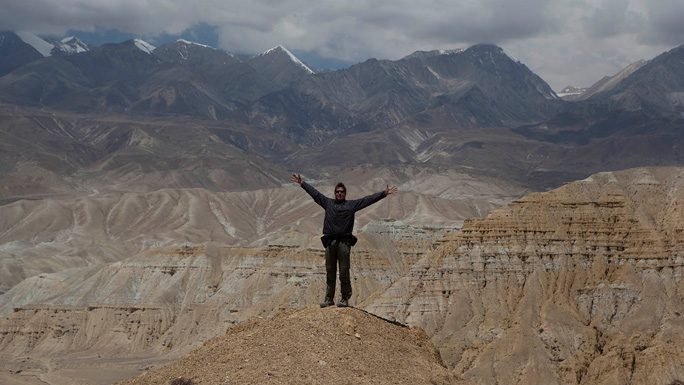

MUSTANG
Get the rare privilege to trek to the exotic land beyond theHimalayas.
To trek in Upper Mustang is a rare privilege. Here you will experience the way of life of true mountain people, who were not much in touch with the rest of Nepal for hundreds of years, and even until recent times had an officially recognized king.
In many ways, a trek into Upper Mustang is similar to trekking in Tibet, as geographically it is a part of the Tibetan plateau. The district of Mustang was, until 1950, a separate kingdom within the boundaries of Nepal. The last king, the Raja of Mustang, still has his home in the ancient capital known as Lo Manthang.
 Upper Mustang was opened to non-Nepali trekkers only some fifteen years ago and even today, access is still highly restricted. To enter Upper Mustang, that is to travel further north from Kagbeni, trekkers need special trekking permit and must be accompanied by a government appointed officer.
Upper Mustang, being in the Himalayan rain shadow, is one of the regions in the country suitable for trekking even during monsoons. During this time, the upper Kali Gandaki valley is still quite dry with only occasional rainfall.
 The Mustang trek is not particularly difficult, the highest point reached being only 3,800 meters, but the conditions at times can be arduous. Mustang is cold in winter and is always windy and dusty through the year. Winter treks are best avoided due to harsh weather.
There are few accommodation facilities available above Kagbeni, so groups must be fully self-sufficient, especially in fuel. While porters are available in Jomsom it is preferable to use mules to carry the loads up to Mustang. These pack animals are available locally and are more economical, and certainly more environmentally friendly than porter.
 Mustang trek requires a minimum of 9 days, starting and ending in Kagbeni. This allows the trek to be completed within the 10-day period that the permit allows. The route generally follows the Kali Gandaki valley but, occasionally climbs high above the valley walls.
The settlements are scattered and there is little sign of cultivation between villages. In Mustang, little grows without irrigation, thus the region resembles a desert albeit mountainous, nuclear settlements in fertile areas.
 Lo Manthang, the old capital, is reached in four days and at least one extra day should be spent here to catch the sights and sound of this unique walled settlement. Ponies are available for hire if you so desire. The return trip can either follow the same route while entering or, as an alternative route, the eastern bank of the Kali Gandaki may be followed.
In many ways, a trek into Upper Mustang is similar to trekking in Tibet, as geographically it is a part of the Tibetan plateau. The district of Mustang was, until 1950, a separate kingdom within the boundaries of Nepal. The last king, the Raja of Mustang, still has his home in the ancient capital known as Lo Manthang.
 Upper Mustang was opened to non-Nepali trekkers only some fifteen years ago and even today, access is still highly restricted. To enter Upper Mustang, that is to travel further north from Kagbeni, trekkers need special trekking permit and must be accompanied by a government appointed officer.
Upper Mustang, being in the Himalayan rain shadow, is one of the regions in the country suitable for trekking even during monsoons. During this time, the upper Kali Gandaki valley is still quite dry with only occasional rainfall.
 The Mustang trek is not particularly difficult, the highest point reached being only 3,800 meters, but the conditions at times can be arduous. Mustang is cold in winter and is always windy and dusty through the year. Winter treks are best avoided due to harsh weather.
There are few accommodation facilities available above Kagbeni, so groups must be fully self-sufficient, especially in fuel. While porters are available in Jomsom it is preferable to use mules to carry the loads up to Mustang. These pack animals are available locally and are more economical, and certainly more environmentally friendly than porter.
 Mustang trek requires a minimum of 9 days, starting and ending in Kagbeni. This allows the trek to be completed within the 10-day period that the permit allows. The route generally follows the Kali Gandaki valley but, occasionally climbs high above the valley walls.
The settlements are scattered and there is little sign of cultivation between villages. In Mustang, little grows without irrigation, thus the region resembles a desert albeit mountainous, nuclear settlements in fertile areas.
 Lo Manthang, the old capital, is reached in four days and at least one extra day should be spent here to catch the sights and sound of this unique walled settlement. Ponies are available for hire if you so desire. The return trip can either follow the same route while entering or, as an alternative route, the eastern bank of the Kali Gandaki may be followed.